ちきん
赤羽の片すみで、思いついた仕組みをすぐ試す親鳥。実験と寄り道がいきがい。
chicken coin mission
赤羽の片すみで始まった、家族のごほうび実験。
宿題も、お手伝いも、たまにガチャも。これは「チキン・コイン・ミッション」の記録です。
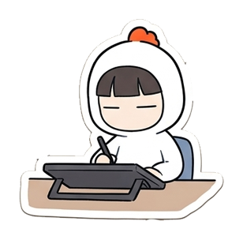
家の中でまわす「ミッションコイン」のしくみを、暮らしのログとして残しています。
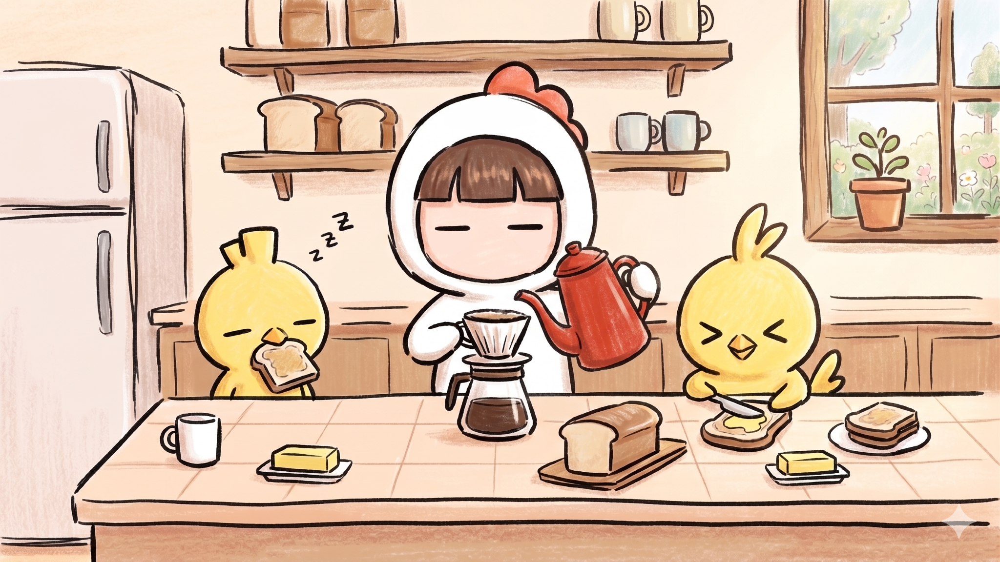
about
チキン・コイン・ミッションは、家の中でまわす「ミッションコイン」のしくみです。 子どもとの毎日をちょっとだけゲームにして、うまくいった日も、ぐだぐだの日も、ぜんぶ含めて「暮らしの制作ログ」として残しています。
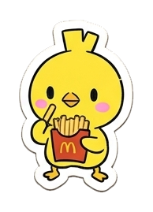
最初の記事をnoteで読む
family
赤羽の片すみで、思いついた仕組みをすぐ試す親鳥。実験と寄り道がいきがい。
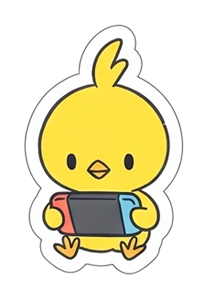
納得できるルールには強い。ゲームと討伐が好き。
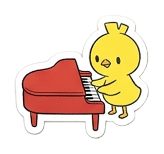
かわいいものへの反応が速い。楽しいことと収集に強い。
days
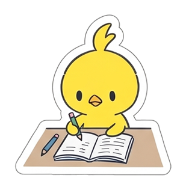
やることを小さく置く。全部じゃなくて、今日のひとつから。
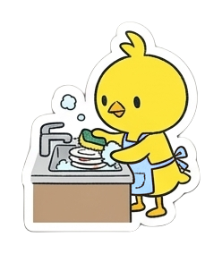
「やらされる」を、ちょっとだけ「選べる」に変える。
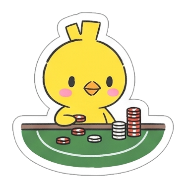
もらったものが見えると、小さい達成が少し残る。
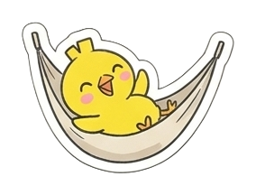
続けるために、続かない日も仕組みに入れておく。
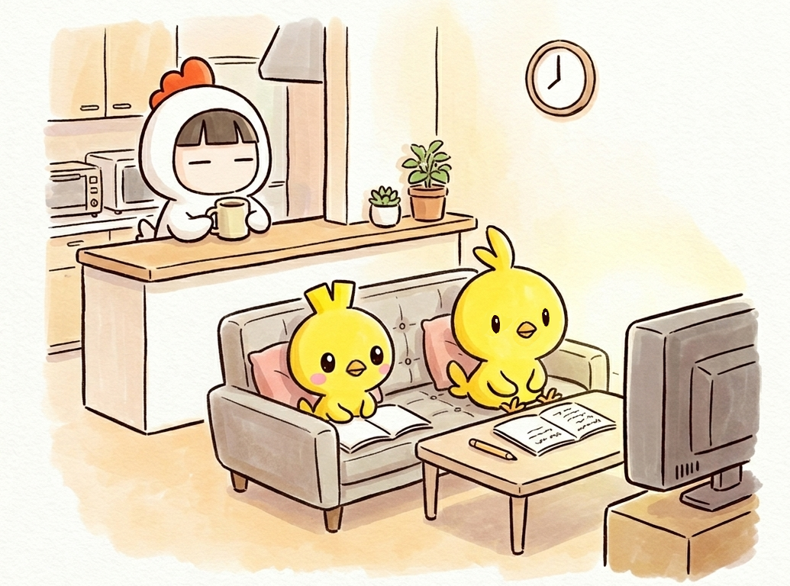
keep it light
うまく回った日だけじゃなく、なんとなく止まった日も残しておく。 あとから見返すと、そこにもちゃんと暮らしの癖がある。
lifelog
手書きのミッションシート、コイン、ガチャ、思いつきの報酬。 ちゃんと続いた日も、急に崩れた日も、あとから見返すと小さな発見になる。
4月87%、5月77%、6月69%。数字だけ見ると、きれいな右肩下がり。 でもログを見返すと、子どもが「飽きた」というより、予定が多い日・イベント翌日・親が運用しきれない日に落ちやすいことが見えてきました。
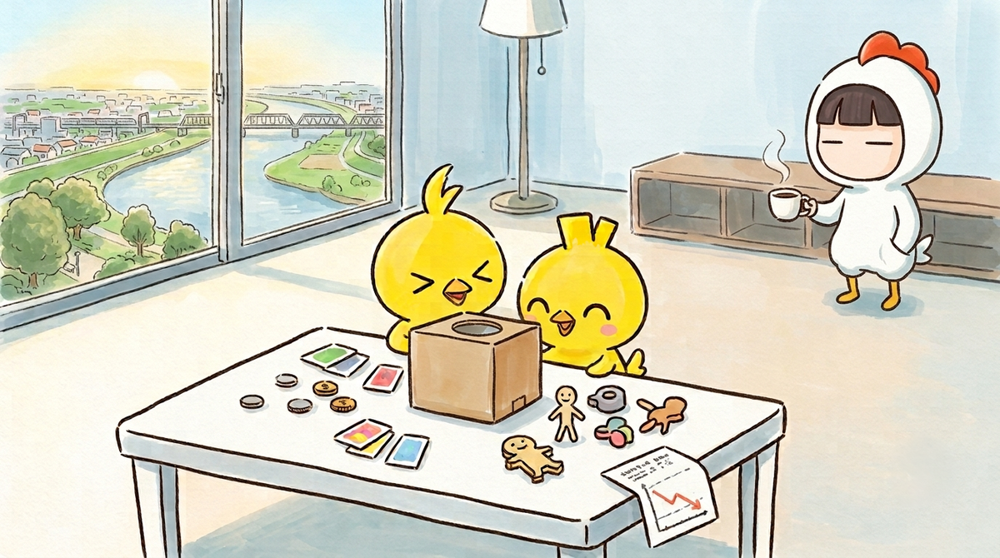
達成率が落ちた日は、予定が詰まった日やイベント後に集中。仕組みそのものより、生活リズムとの相性が大きかった。
毎日ミッションを考えて、記録して、声をかける。子どもより先に、親の手間がボトルネックになる場面もあった。
3Dプリンタが来て、手探りガチャや小さな自作品が報酬に。ごほうびが、家族で作る遊びに変わっていった。
毎日100点を目指すより、崩れたあと戻れる設計へ。休む日も、選べる日も、最初から仕組みに入れておく。
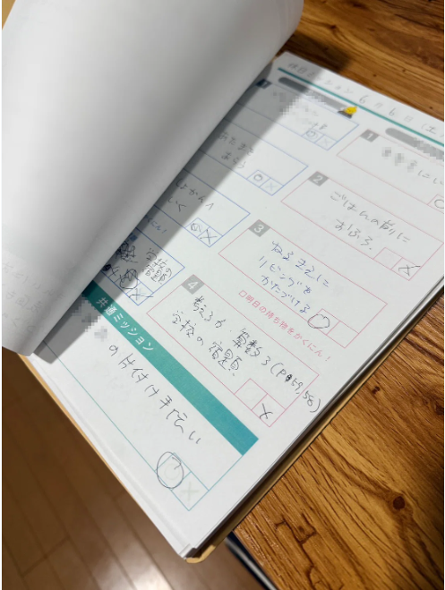
毎日の小さな丸バツが、あとから見ると家族の攻略ログになっていく。
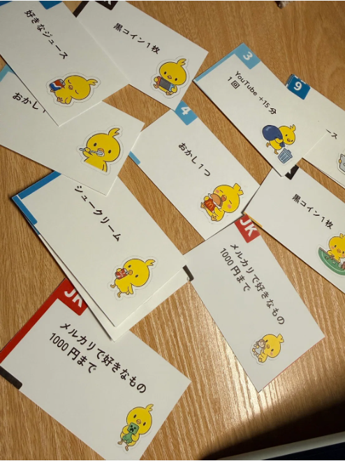
現金でもお菓子でもなく、ルールに触れる権利や選べる楽しさを混ぜてみる。
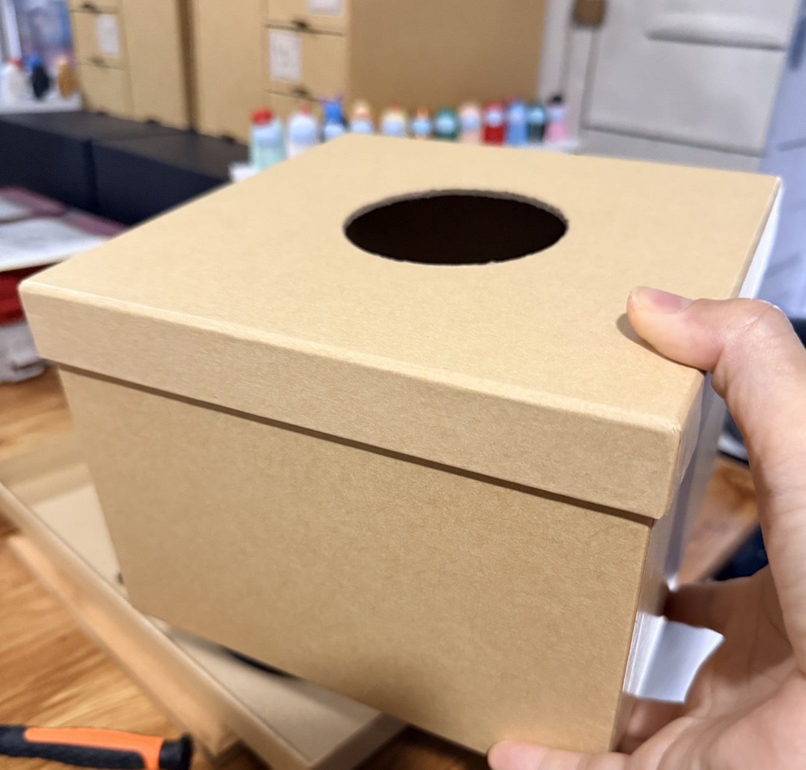
ここから報酬が「買うもの」だけじゃなく、家で作れるものに変わっていく。
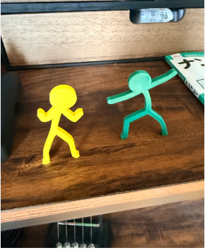
手探りガチャの中身も自作に。小さな造形が、いちばん盛り上がる日もある。
tools & made
ラスベガスで買ってきたコインを、家庭内トークンとして転用。青、赤、緑、白の色に役割を持たせた。
宿題やお手伝いを、今日の候補として並べるための記録用紙。続いた日も、止まった日もログになる。
5月末の3Dプリンタ導入後に生まれた、箱の中から小さな自作品を引く遊び。
報酬が「買うもの」だけじゃなく、家で作れるものに変わっていくきっかけになった小さな造形たち。
ページ、日記、シール、案内役として登場するキャラクター素材。暮らしの記録を少し楽しくするための存在。
journal
家の中で生まれた小さな発明、会話、失敗、うまくいった日。 あとから読み返せるように、ちょっとかわいく保存しておく。
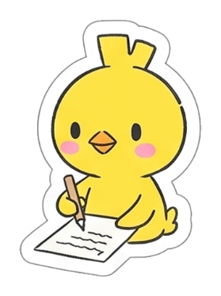